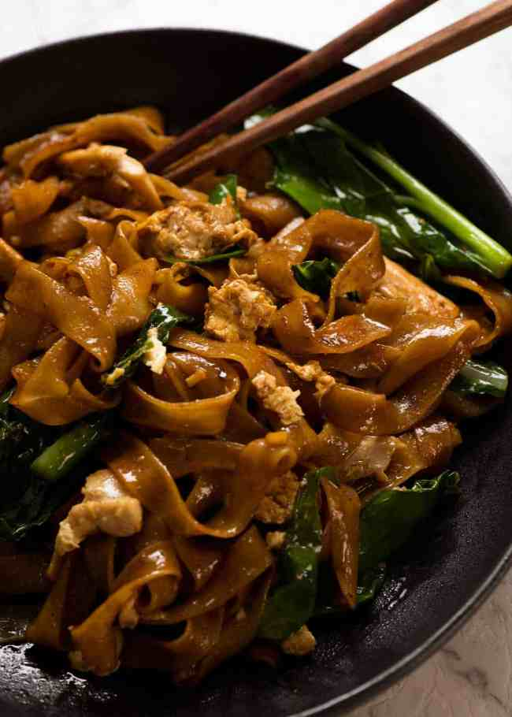

Pad See Ew

Description
This is a recipe for Pad See Ew
Pad See Ew is a classic Thai dish that is very popular overseas. Its a savoury alternative to more sweet and nutty Pad Thai
Ingredients
- dark soy sauce
- soy Sauce
- oyster Sauce
- vinegar
- sugar
- chinese broccoli
- garlic
- ginger
- chicken
- egg
- rice noodles
Steps
- Garlic, chicken and chinese broccoli stems first - Using either a wok or large skillet set over high heat, heat the oil then sauté the garlic until it goes light golden. Add the chicken then once it mostly changes from pink to white, add the Chinese broccoli stems which take longer to cook than the leafy part.
Once the chicken is cooked (it should only take 2 to 3 minutes), toss the Chinese broccoli leaves in and cook for 30 seconds or so just until wilted.
- Push everything to the side to make room to scramble the eggs on the side. This is the traditional Thai way of scrambling eggs in Pad See Ew!
- Crack egg
straight into the wok.
- Scramble egg
- Then mix to scramble it. Speed is of the essence here - we want scrambled egg not a sunny side up egg!
- Empty wok - Remove the chicken and vegetables onto plate. As mentioned above, the best way to cook Pad See Ew at home is to cook the noodles separately so we can get some nice caramelisation on them. If we don’t do this, then the noodles just stew instead of caramelising.
- Add noodles and sauce into the wok.
- Toss quicklyfor 1 to 1 1/2 minutes until the sauce is dispersed throughout the noodles and you see some caramelisation on the edges.
PRO TIP: You want to be quick here because the longer and more you toss, the more noodle breakfast you have. You’ll notice restaurants typically toss the noodles in the wok without using a wooden spoon or other tool for stirring – this too helps to minimise noodle breakage.
A note on Noodle Breakage - That said, you WILL get some noodle breakage, and that is normal / perfectly acceptable. Ever notice how the wide, flat noodles in Pad See Ew served at Thai restaurants are not long strands? That’s just the way it is. In fact, traditionally, Pad See Ew is served in Thailand with a FORK or spoon instead of noodles for ease of eating.
- Add chicken and veg back in - Once the noodles are caramelised, add the chicken and vegetables back in. Give it a quick toss just to disperse, then serve!